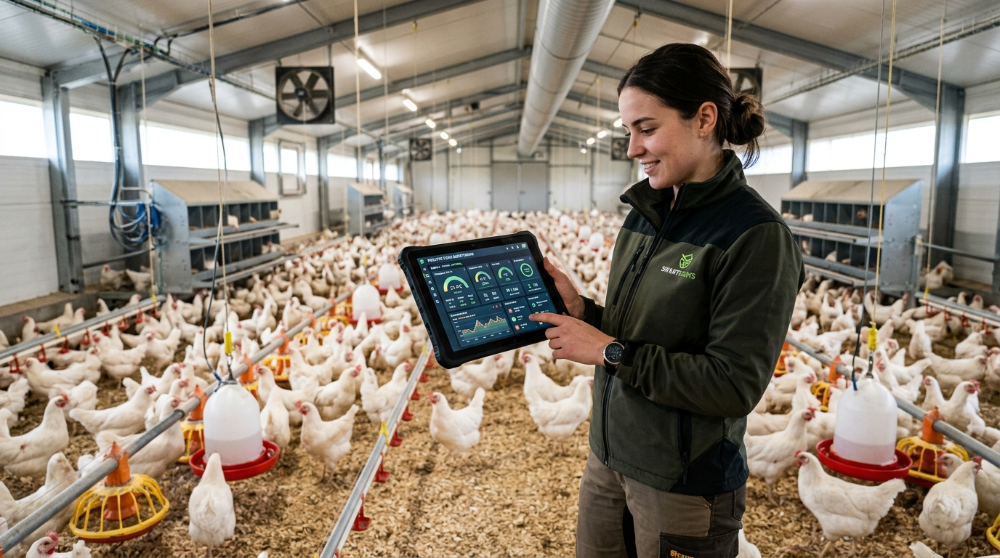
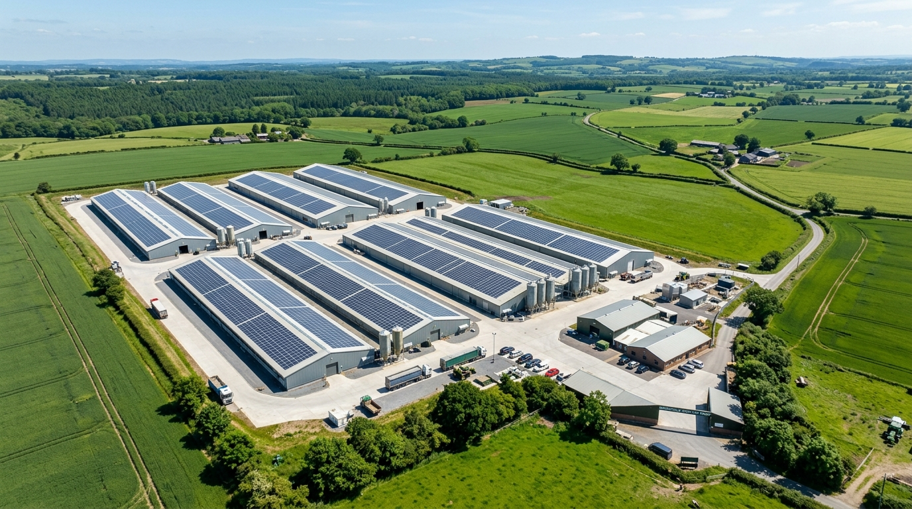

Galeri



Tingkatkan efisiensi dan kualitas panen dengan teknologi pemantauan modern.
AyamIoT Farm adalah penyedia layanan peternakan ayam masa depan yang mengintegrasikan Internet of Things (IoT). Kami membantu peternak memantau kondisi kandang secara akurat untuk memastikan kesehatan ayam dan hasil panen yang optimal. Kami percaya bahwa teknologi dapat menyederhanakan proses peternakan.

Pemantauan kondisi kandang secara keseluruhan secara real-time.
Menampilkan data suhu untuk menjaga kehangatan ayam yang ideal.
Pemantauan sirkulasi udara dan tingkat kelembapan kandang.
Informasi otomatis mengenai ketersediaan stok pakan ayam.
Layanan konsultasi untuk pengelolaan peternakan modern berbasis teknologi.
Data terakhir diperbarui: Memuat...

📍 Jl. Peternakan Maju No. 123
📞 0812-3456-7890
✉️ info@ayamiot.local